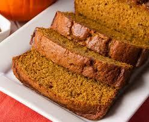

Pumpkin Bread

This recipe is one of my favorites. Is so delicious that it is the most frequent bake my boyfriend and I do regarding the season just because it taste amazing and all the spices in it smell amazing and work great with each other.
Theres no need of a special ocasion to bake, but if you would like to surpice your famaily and friends this fall with a deliciouse and unique pumpkin Bread I totallhy recomend this quick recipe.
Ingredients
- 250 g of Flour
- 1/2 tsp of salt
- 1/2 tsp of baking powder
- 1 tsp of baking soda
- 1 tsp ground cloves
- 1 tsp ground cinamon
- 1 tsp ground nutmeg
- 170 g of soft butter (very important butter is not cold)
- 400 g of sugar
- 2 eggs
- 1 can or 425 g of pumpkin pure
Steps
- In a bowl add and mix all the dry ingredients. ( mix the fluor, salt, baking powder, baking soda, ground cloves, ground cinamon, ground nutmeg)
- In a separate bowl mix the soft butter with the sugar. make sure there are no butter lumps
- Once the sugar is incorporated with the butter, add the eggs and the pumpkin pure to the bowl
- Mix well
- Finally add the bowl with dry ingredients to the wet ingredients and make sure everything is well incorporated
- Preheat the oven at 325 F
- Once the oven is ready, pure the mix into a baking container and bake for 65-75 minutes
- Once baked let our deliciose Pumpkin bread cool for 10 min and enjoy!